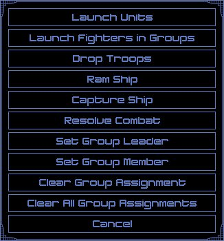

Tactical Combat Window - Orders

| This window allows you to give orders to your vehicles in combat. These orders cover items beyond just moving your ships and firing their weapons. | ||
| None |
| Launch Units |
This button displays the Launch \ Recover Units Window so that you can launch fighters or satellites from the currently selected ship. Each ship has a limit to how many fighters or satellites it can launch per combat turn. Once that limit is reached, you cannot launch any more units until the next combat turn. When combat is completed, all units are automatically recovered by the ships that can carry them. |
|
| Launch Fighters in Groups | This selection is similar to Launch Units, but it allows you to automatically launch your fighters into certain set group sizes. When you select this order, then a window will be displayed to allow you to select the size of the fighter group. Once you select a size, then the currently selected ship will launch all of the fighters it can this turn into groups of the size you selected. | |
| Drop Troops | Use this command to cause your currently selected ship to attempt to drop troops onto a nearby planet. Requirements for this command are that you are carrying troops and that you are in an adjacent square to an enemy planet. If the troops are dropped, then the Ground Combat Window will be displayed to resolve the ground combat. | |
| Ram Ship |
This selection will cause your currently selected ship to attempt to ram another ship. When this button is pressed, you will be returned to the Tactical Combat Window to select the target ship to ram. The target ship must be adjacent to your ship to be able to ram it. When your ship rams another ship, it may destroy the other ship, and it may destroy itself as well. The ships have their component resistance totaled, and then applied to the other ship. If the damage is greater than the ship can stand, it is destroyed. |
|
| Capture Ship |
This selection will cause your currently selected ship to attempt to board and capture another ship. To execute this order, your ship must have undestroyed boarding parties of some kind and the target ship must have no shields remaining. When this button is pressed, you will be returned to the Tactical Combat Window to select the target ship to capture. When you attempt to capture another ship, your boarding parties are compared against their defenses. If your offense is superior to their defense, then you will capture their ship and it will become yours to control. If they have a self-destruct component, they will activate it destroying both ships. Regardless of whether the capture attempt succeeds or fails, all of your boarding party components will be destroyed. |
|
| Resolve Combat | This selection will cause the rest of combat to be executed automatically under computer control. This is the same as the Auto setting, except that you will not have to press the End Turn button to end each turn. | |
| Set Group Leader | This selection will set the currently selected ship to be a combat group leader. When this button is pressed, a window will be displayed to allow you to select a combat group. All combat group members of this combat group will follow this leader ship in formation. | |
| Set Group Member | This selection will set the currently selected ship to be a combat group member. A window will be displayed to allow you to select a combat group. When the leader for this group is moved, all group members will move automatically in formation. | |
| Clear Group Assignment | This selection will clear any combat group setting the currently selected piece has. | |
| Clear All Group Assignments | This selection will clear all of the combat group settings for all of your ships in combat. | |
| Cancel | This button will close this window and return you to the Tactical Combat Window. |
| None |